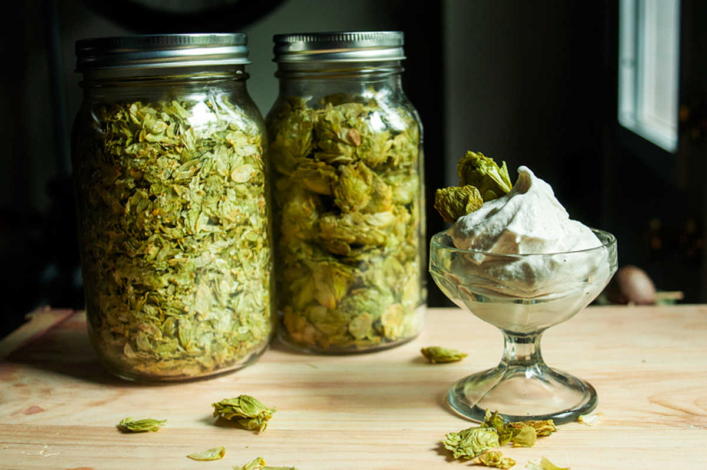
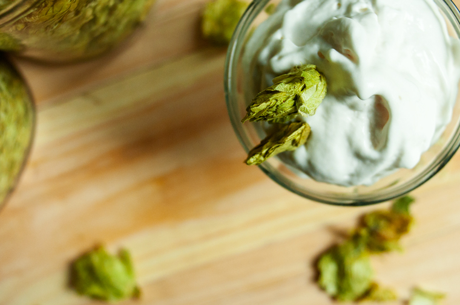

hop ice cream
1 quart — 600 minutes
Me and Devine like craft beer a lot. To help satisfy our evergrowing craving, I decided to try and make hop flavoured ice cream.
This ice cream is definitely for people who love the smell and taste of hops (as well as cold summer dairy-free treats).

I wasn't sure how to 'infuse' the hops into the ice cream base, we tried making hop tea by infusing it overnight in the fridge, but the taste wasn't strong enough. Felt we would get better results and better flavour if the hops were heated. The pouch method worked pretty well, the ice cream base was perfect! Full of delicious bitterness! Devine suggested to make a concentrate with the hops first, and then mix it into the base next time.
The hops used in this recipe are an American variety called "Colombus". We got them from La Choppe a Barrock on Villeneuve and Coloniale in Montreal. Every time we make home brews, we pick up the ingredients there! You can buy a wide variety of hop buds there, you can even get the pellet kind.
It was my second time using the ice cream maker, I got it from the 'Free stuff Montreal' group on facebook. It looks like a little red pail — super cute. The woman I got it from even had the manual! You can make ice cream without a machine, although having one helps with the churning process. It saves a lot of time and effort. If i hadn't gotten that ice cream maker for free, i dont think id have one now, but since it's here might as well use it!
If you too, are having too many beers these days, try and cook with hops instead. Same taste, different format!
 hops 7 buds
hops 7 buds coconut milk 2 X 378ml cans
coconut milk 2 X 378ml cans maple syrup 1/2 cup
maple syrup 1/2 cup sea salt 1/4 tsp
sea salt 1/4 tsp cornstarch 1 1/2 tbsp
cornstarch 1 1/2 tbsp vanilla extract 1 tsp
vanilla extract 1 tsp
hop ice cream
- Roughly chop 7 hop buds (may want to use less if you want it less hoppy). Place leaves into the center of a cheese cloth and make a little loose pouch with it, tying the end. Reserve for later.
- Shake 2 cans of coconut milk before opening them, full-fat coconut milk separates over time and shaking will help to mix it up again. Reserve a 1/2 cup of coconut milk for later, put the rest in a pan with 1/2 cup of maple syrup and 1/4 tsp of salt.
- Bring up to medium-low heat, stir until the maple syrup has dissolved completely.
- Stir 1 1/2 tbsp of cornstarch into the 1/2 cup of coconut milk that was set aside. When dissolved, pour into the pan with the rest of the coconut milk, while whisking slowly.
- Increase the heat to medium and add your hop pouch! Let the mixture cook for about 8 minutes. Don't let it come to a boil! Reduce the heat if necessary. Move the pouch around once in a while, pinching it down lightly with a wooden spoon to get some of that nice hop flavour out into your ice cream base.
- Remove from heat, stir in 1 tsp of vanilla extract. Leave it to cool — don't remove the hop pouch!
- When cool, take the pouch out and squeeze out all of the 'hop juice' into the pan using your hands. Mix one last time and pour into a container. Place a sheet of parchment paper over the top so you don't get a skin forming on the surface. Refrigerate for a minimum of 4 hours (or overnight!).
- Pull your ice cream out of the fridge. It should have a thick pudding-like texture. Pour into your ice cream maker and churn it to desired consistency (I let it run for ~23 minutes).
- If you don't have an ice cream maker, please refer to any these 6 methods from the Kitchn.
- Transfer to a container and press a sheet of parchment paper over the top to keep ice crystals from forming. Your ice cream should be ready to eat in 5 hours or so! If you want harder ice cream wait until the next day to eat it. Enjoy!